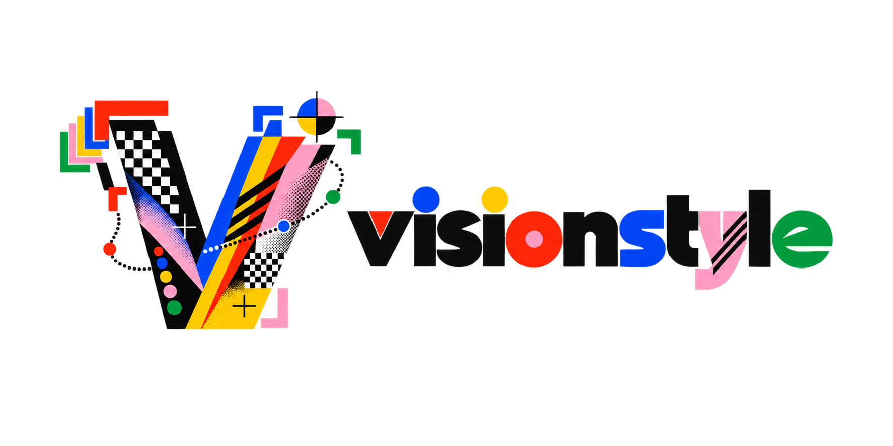
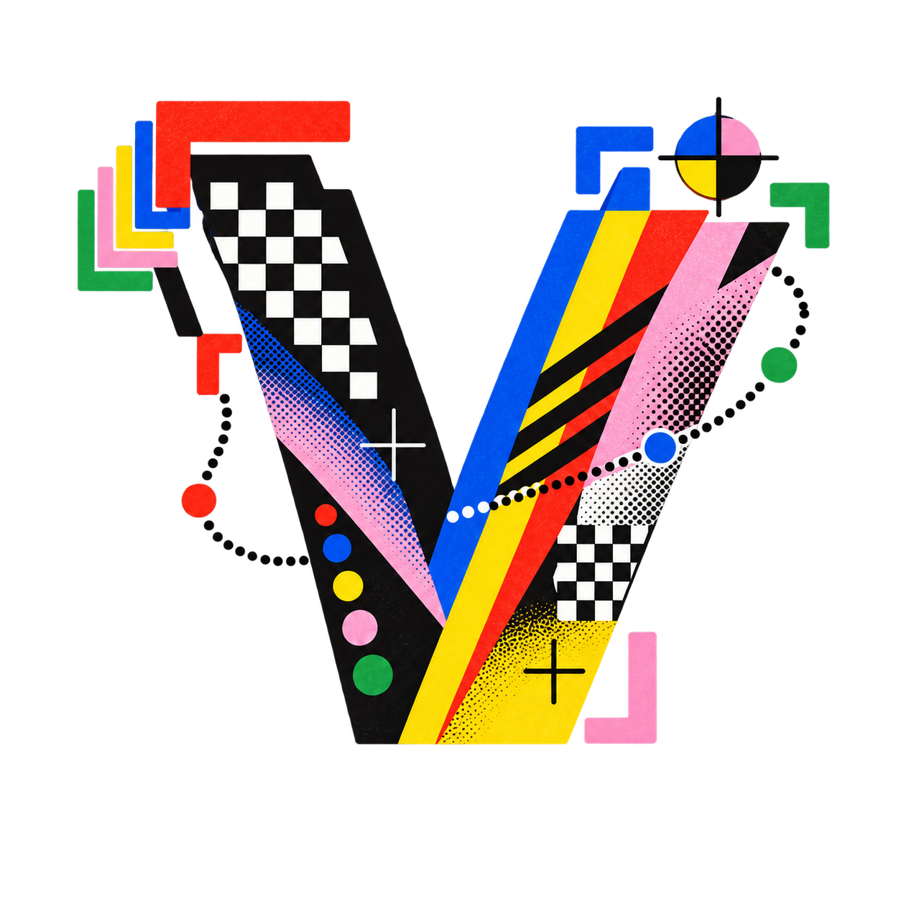
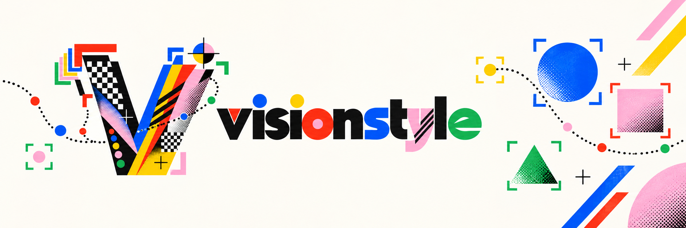

Cinematicamber / teal · filmic grade
Active
Product design system
A practical interface language for the visionstyle Studio, documentation, and GitHub presence.

01 / Foundations
#FAF7F0#FFFDF8#111111#D2CBBF#FF382A#121212#1C1C1A#FFFDF7#45433E#FFD514Spacing scale / 4 px base
Product type
VSSans handles UI, controls and readable values. VSMono handles metadata, code, measurement and control labels. The display serif is reserved for marketing and documentation headings—never dense Studio settings.
02 / Shell
Source image, model, confidence, run state and the primary action live here. Keep it calm.
Preset exploration and accordion controls. Numbers make a deep tool feel navigable.
Selection-specific edits and output. Collapse below 1180 px, do not squeeze the canvas.
03 / Controls
04 / Modules
Preset cards / visual choice
Active
New
Cards are visual shortcuts. Their descriptions must explain the result, not implementation details.
Context menu / always anchored
Menus open from a clear trigger, align to that trigger, and close on Escape. Destructive options are last.
Accordion sections
Use sequential numbers and a one-line state summary. Only one panel should be open on compact screens.
Chips / components
Chips show composition and ordering. They are not used as generic tags.
Feedback
Use a small status token near the relevant control, not a disruptive global alert.
05 / Canvas
Let users understand the style in context before they choose it.
Previews are dark by default so detection color is stable. Image content fills the space; tool controls must never visually outweigh the scene.
Legend system
Class color and label chip share a hue.
Tracking trail uses the identity’s green signal.
Confidence is supporting data, not the loudest color.
Pink is reserved for selection and direct manipulation.
06 / Play
Try it: click either detection frame, change the theme, alter the stroke, and switch the trail or glow on and off. This is the interaction model for the Studio: immediate, visible, and always tied to the image.
07 / Icons
Favicon / app icon

16Brand asset placement
Use transparent lockups in top bars and documentation. Use the full-color V for presets, onboarding and social cards. Use the simplified watermark V for favicon, app icon and video watermark. Do not place the raster logo on a second white rectangle.

08 / GitHub

Open-source documentation should have the same contrast, care and visual confidence as the Studio. Lead with the theme-aware banner, then make the first action obvious.
<picture> pattern and GitHub’s prefers-color-scheme source rules. The dark banner is not optional decoration; it protects contrast in GitHub dark mode.Contrast
Text: 4.5:1 minimum. Control labels: 4.5:1. Detection overlays may use color, but must include a label, stroke or pattern distinction.
Keyboard
Every input, accordion, menu and icon-only action is reachable in order. Escape closes menus. Enter triggers the visible primary action.
Responsive
Below 1180 px hide the inspector. Below 860 px transform the left rail into a drawer. The preview never becomes smaller than its controls.